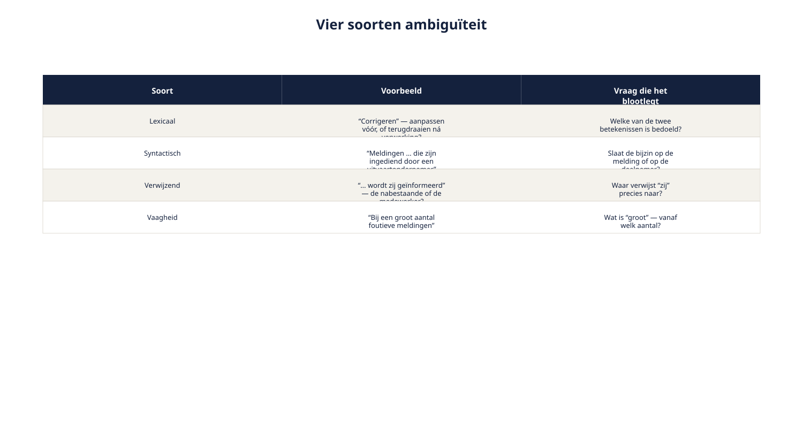
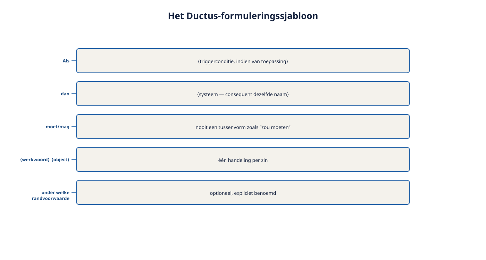

Deel 6 — Natuurlijke taal: formuleringssjabloon, ambiguïteit en transformatie-effecten
Slidedeck · Ductus-cursus Requirements engineering · niveau 1 · deel 6 van 10 · 31 slides
Slide 1 — Titel
Natuurlijke taal
Sjabloon, ambiguïteit, transformatie-effecten
Cursus Requirements Engineering — Niveau 1, deel 6
Ductus
Slide 2 — Vandaag
- Communicatie als transformatieproces
- Vier soorten ambiguïteit
- Het Ductus-formuleringssjabloon
- Grenzen van het sjabloon
- Bevinding R3 én R4 sluiten
Slide 3 — Citaat
"Er stond: de werkgever kan de aanlevering corrigeren. Wij dachten: aanpassen vóór verwerking. Uitkeringen dacht: terugdraaien ná verwerking."
Post-mortem WGP 2.0
Slide 4 — Eén zin. Vier afdelingen. Vier lezingen.
Grammaticaal correct. Ogenschijnlijk helder. Toch ambigu.
Slide 5 — 1. Communicatie als transformatieproces
Slide 6 — Figuur 6-1

Slide 7 — Vijf stappen, vijf risico's
- Faisal heeft een mentaal model
- Hij codeert het in taal
- Ruben decodeert het naar zíjn model
- Ruben legt vast — weer een codering
- Een derde partij decodeert de vastlegging opnieuw
Slide 8 — Vastleggen is communicatie.
Geen garantie.
Precisie verkleint het risico op verschuiving. Elimineert het nooit.
Slide 9 — Opdracht 6.2 — Het fluisterspel
Eén zin. Twee keer overgeschreven in eigen woorden.
Vergelijk de drie briefjes: waar verschoof de betekenis?
Drietallen · 15 minuten
Slide 10 — 2. Vier soorten ambiguïteit
Slide 11 — Elk met eigen reparatie
| Soort | Voorbeeld | Reparatie |
|---|---|---|
| Lexicaal | "Corrigeren" | Preciezer werkwoord |
| Syntactisch | Onduidelijke zinsbouw | Herstructureren, korter |
| Verwijzend | "Hij", "zij", "deze" zonder anker | Herstructureren |
| Vaag | "Snel", "meestal", "voldoende" | Grens benoemen |
Slide 12 — Figuur 6-2

Slide 13 — Ambiguïteit ontdek je zelden in je eigen tekst.
Je hebt je eigen bedoelde lezing al in gedachten.
Laat een ander lezen. Of lees hardop voor.
Slide 14 — Opdracht 6.1 — Welke soort ambiguïteit?
Zes zinnen. Welke soort(en), en welke lezingen?
Individueel · 15 minuten
Slide 15 — 3. Het Ductus-sjabloon
Slide 16 — Als ⟨triggerconditie⟩, dan ⟨systeem⟩ moet/mag ⟨werkwoord⟩ ⟨object⟩ ⟨randvoorwaarde⟩.
Slide 17 — Vier regels
- Triggerconditie vooraan, expliciet
- Consequent hetzelfde systeem als onderwerp
- Moet of mag — nooit iets ertussenin
- Eén handeling per zin
Slide 18 — Twijfel je tussen "moet" en "mag"?
Dat is zelf een signaal: de requirement is nog niet scherp genoeg doorgevraagd.
Slide 19 — Toegepast
| Voor | Na |
|---|---|
| "De werkgever kan de aanlevering corrigeren." | "Als een aanlevering nog niet is verwerkt, mag de werkgever de aanlevering aanpassen." |
| "Als een aanlevering al is verwerkt, moet de werkgever een wijzigingsaanvraag indienen." |
Slide 20 — Figuur 6-3

Slide 21 — Ambiguïteit verbergt vaak niet één onduidelijke requirement.
Maar meerdere requirements die per ongeluk zijn samengevoegd.
Slide 22 — 4. Het sjabloon als test
Slide 23 — Citaat
"Als een nabestaande een melding indient, moet het systeem… een wizard tonen?"
Slide 24 — Als een zin er niet natuurlijk in past,
is dat vaak een teken dat er een oplossing verstopt zit
waar een behoefte hoort te staan.
Slide 25 — Opdracht 6.3 + 6.4 — Herschrijven en wringen signaleren
Vier zinnen herschrijven met het sjabloon.
Waar wringt het — en waarom?
Individueel dan tweetallen · 40 minuten
Slide 26 — Wat verandert er als je iteratief werkt?
- Given/When/Then is een variant van hetzelfde sjabloon
- Zelfde valkuil: een acceptatiecriterium dat een schermelement beschrijft, is nog steeds een oplossing verpakt als eis
Slide 27 — 5. Grenzen van het sjabloon
Slide 28 — Waar het sjabloon niet volstaat
- Rijke context en rationale → begeleidende tekst ernaast
- Combinaties van drie of meer voorwaarden → tabel (deel 5)
- Kwaliteitseisen → eigen vorm (deel 8)
Geen tegenspraak met deel 5 — een bevestiging ervan.
Slide 29 — 6. Bevinding R3 en R4
Slide 30 — Beide gesloten
| Bevinding | Gedekt door |
|---|---|
| R3 — oplossingen als eisen | Ijsbergmodel + doorvragen (deel 4) én het sjabloon als test (dit deel) |
| R4 — meerduidige formuleringen | Vier soorten ambiguïteit + het sjabloon |
Slide 31 — Volgende keer: deel 7
Modelgebaseerde requirements
Voor wanneer tekst — hoe precies ook — niet de beste vorm is.